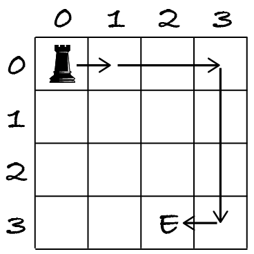
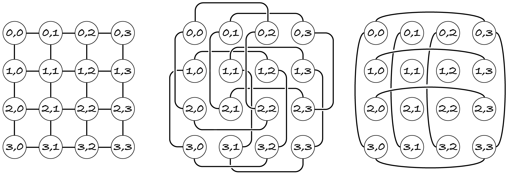
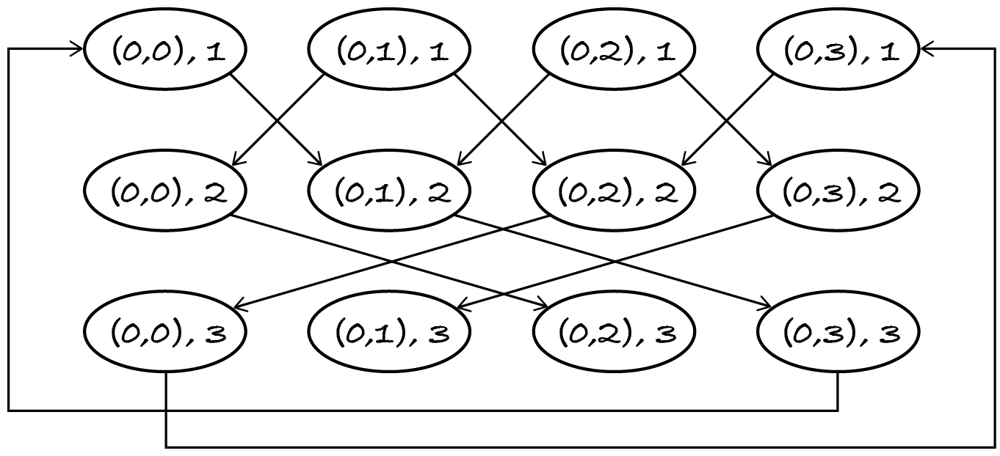

21.4. State graphs
As I mentioned in Section 17.1, directed graphs can represent states and transitions between states. The example I gave was the states of the board during a game of Noughts and Crosses (also known as Tic-tac-toe). The transitions between states are the player moves.
This section shows an example of a problem that can be easily solved if we model it with a state transition graph.
21.4.1. Problem
The problem to solve is similar to the one about a knight moving on a chessboard, but this time using a rook – a chess piece that moves only horizontally or vertically. We’re given a rectangular board of squares, a start square and an end square. We want to find the fewest moves for the rook to go from the start to the end square, with the proviso that moves have to successively be 1, 2, 3, 1, 2, 3, 1, … squares long until the end square is reached.
This means that the first move goes to an adjacent square, the second move jumps over one square, the third move jumps over two, the fourth move goes again to an adjacent square, etc. If there’s a path (a sequence of moves) from the start to the end that stays within the board, then output the length of the path (the number of moves), otherwise output –1.
The next figure shows a 4×4 board, with a rook symbol on the start square and an E marking the end square. For this input, the output should be four. A path of length four goes first one square right, then two squares right, then three squares down and finally one square left.
A path that first goes two squares to the right and then three down is shorter, but it’s not a valid path because it doesn’t start with a move of one square.
To check your understanding of the movement, find another shortest valid path from the start to the end, also in four moves.
Move one square down, then two squares down, then three to the right and finally one to the left.
As usual, I first construct some test cases. The inputs and output are exactly as for the knight moves problem: three input pairs of integers indicating the size of the board and the coordinates of the start and end squares, and one output integer indicating the shortest path length.
[1]:
from algoesup import check_tests
rook_moves_tests = [
# case, size, start, end, moves
('1x1 board', (1, 1), (0, 0), (0, 0), 0),
('1 row, 2 cols', (1, 2), (0, 0), (0, 1), 1),
('start = end', (3, 3), (1, 1), (1, 1), 0),
('figure example', (4, 4), (0, 0), (3, 2), 4),
('2 away', (4, 4), (0, 0), (0, 2), -1)
]
check_tests(rook_moves_tests, [tuple, tuple, tuple, int])
OK: the test table passed the automatic checks.
Info: This is a simplification of problem Eternal Truths from the 2004 Portuguese University Programming Contest.
21.4.2. Graph
The problem asks for the fewest moves. As for the knight moving on a chessboard, this seems to be a shortest path problem on an undirected graph, with one node per square. However, the distance of the move changes in each step, so the neighbours of each square are constantly changing. It seems we need three graphs instead of one.
Here they are for the example board above. In the left-hand graph, the edges connect the adjacent squares. In the middle graph, the edges connect nodes that are two squares away. In the right-hand graph, the edges connect nodes that are three squares away.
The algorithm would be a modified breadth-first search that is constantly switching between graphs, because the first, fourth, seventh, … moves are done on the left-hand graph, the second, fifth, eighth, … moves are done on the middle graph, the third, sixth, ninth, … moves are done on the right-hand graph. This sounds too complicated and error-prone to me.
We need an approach that uses a single, unchanging graph, because all our graph algorithms work on such graphs, not on graphs where the edges are changing as the algorithm progresses.
The solution is to define a graph that represents the possible states of the rook. As breadth-first search explores the paths from the start node, it needs to know which square the rook is on and what move it can do next. The state of the rook is its current position and the distance of the next move.
For each square S we need three nodes (S, 1), (S, 2) and (S, 3) that represent the three possible states for when the rook is in that square: it can next move by one, two or three squares.
The graph has one edge (A, 1) ⟶ (B, 2) for each square B that is adjacent to square A. The edges state that the rook can move from any square to any adjacent square if the next move is by one square. Once it does the move, the rook is in a state where it next moves by two squares. Likewise there are edges
(A, 2) ⟶ (B, 3) for each position B that is two squares away from A
(A, 3) ⟶ (B, 1) for each position B that is three squares away from A.
Here’s the state transition graph for a 1×4 board: a single row of four squares.
The layout of the edges shows when the rook can move left or right. The first move, from (A, 1) to (B, 2), goes to the square left or right of A, when possible. The second move, from (A, 2) to (B, 3), goes left or right by two squares when possible. Finally, the third move, from (A, 3) to (B, 1), is only possible from the left-most to the right-most square and vice versa.
Having constructed this graph, we apply BFS to find the shortest path from (start, 1) to (end, move) where move can be any value. Once we reach the end square, we don’t really care what the next move should be.
21.4.3. Code
First, I construct the state transition graph.
[2]:
%run -i ../m269_digraph
def state_transitions(size: tuple) -> DiGraph:
"""Return the state transition graph for a board of the given size.
Preconditions: size is a pair of positive integers, the number of rows and columns
"""
rows = size[0]
columns = size[1]
states = DiGraph()
# add nodes (S, 1), (S, 2), (S, 3) for every square S
for row in range(rows):
for column in range(columns):
for move in (1, 2, 3):
states.add_node(((row, column), move))
# add edges
for state in states.nodes():
position = state[0]
distance = state[1]
row = position[0]
column = position[1]
next_distance = distance % 3 + 1 # 1 -> 2 -> 3 -> 1 -> ...
# generate the 4 possible moves: up, left, down, right
for move in (-distance, distance):
# do vertical move if it stays within board
if 0 <= row + move < rows:
next_state = ((row + move, column), next_distance)
states.add_edge(state, next_state)
# do horizontal move if it stays within board
if 0 <= column + move < columns:
next_state = ((row, column + move), next_distance)
states.add_edge(state, next_state)
return states
Before moving on, I test this function with a small 1×3 board. Remember that the graph layout is semi-random, so you may have to run the next cell a few times to get a more understandable drawing.
[3]:
state_transitions((1, 3)).draw() # single row, three columns
You should be able to see, among other edges, ((0, 1), 1) ⟶ ((0, 0), 2) ⟶ ((0, 2), 3): the rook moves one square left from (0, 1) to (0, 0) and then two squares right to (0, 2). Moving next by three squares would put the rook outside the board.
Next, I copy the code for the knight moves problem and modify it for this problem. I’ll explain the changes after the code.
[4]:
%run -i ../m269_queue
def rook_moves(size: tuple, start: tuple, end: tuple) -> int:
"""Return the least number of 1, 2, 3, 1, ... rook moves from start to end.
Return -1 if end is not reachable from start.
Preconditions:
- size is a pair (rows, columns) with rows > 0 and columns > 0
- start and end are pairs (r, c) with 0 <= r < rows and 0 <= c < columns
"""
if end == start:
return 0
graph = state_transitions(size) # change 1
initial_state = (start, 1) # change 2
visited = {initial_state} # change 2
unprocessed = Queue()
for neighbour in graph.out_neighbours(initial_state): # change 2
unprocessed.enqueue((neighbour, 1)) # change 4
while unprocessed.size() > 0:
to_visit = unprocessed.dequeue()
current = to_visit[0]
length = to_visit[1]
if current[0] == end: # change 3
return length
elif current not in visited:
visited.add(current)
for neighbour in graph.out_neighbours(current):
unprocessed.enqueue((neighbour, length + 1)) # change 4
return -1
The changes were as follows, besides the trivial modifications to the header and docstring.
Replace the code that creates the graph for the knight’s moves with a call to
state_transitions.The initial node is
(start, 1)instead ofstartbecause nodes now represent states, not squares.For the same reason, extract the square from the
currentnode before comparing it to theendsquare.Further simplify the BFS algorithm, which I could have already done for the knight moves problem. Instead of adding to the queue edge (A, B) with the length of the path to B, I just add B and the length, because the shortest path is not asked for, only its length.
Finally, let’s run the code on the test table created at the start.
[5]:
from algoesup import test
test(rook_moves, rook_moves_tests)
Testing rook_moves...
Tests finished: 5 passed (100%), 0 failed.
The moral of this and similar problems is:
Note: Instead of inventing a new graph algorithm, model the problem with a graph that allows you to apply or adapt a standard graph algorithm.
Nodes can represent anything, including places, tasks, events, states. Edges may be weighted and directed. This gives graphs a great modelling power. Once we represent the input as a graph, we can often solve the problem with a standard graph algorithm or some small adaptation of it, as done above, because many graph problems fall into one of a small number of categories: find a shortest path, a minimum spanning tree, a topological sort or the graph’s components.
21.4.4. Complexity
The complexity of this kind of approach (transform the input into a graph and apply a graph algorithm) is Θ(n + e) to construct the graph plus whatever the complexity of the graph algorithm is. For this problem, the algorithm used is BFS so the overall complexity is Θ(n + e) + Θ(n + e) = Θ(n + e).
However, the complexity must be stated in terms of the input, not of the constructed graph. We must determine the number of nodes and edges in terms of the input variables, and restate the complexity in those terms.
Exercise 21.4.1
The main input variable is the size of the board: the number of rows r and the number of columns c.
How many nodes does the state transition graph have, in terms of r and c? In other words, give an expression for n, using r and c.
How many edges does the state transition graph have at most? State e as an expression in terms of r and c.
Using the previous expressions, give the complexity Θ(n + e) in terms of r and c.